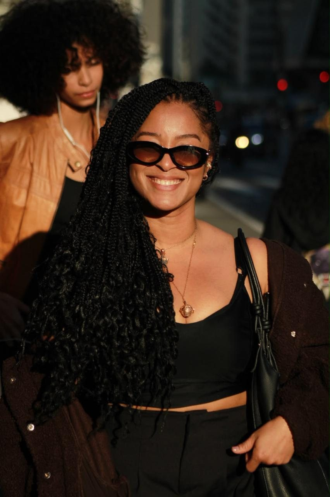
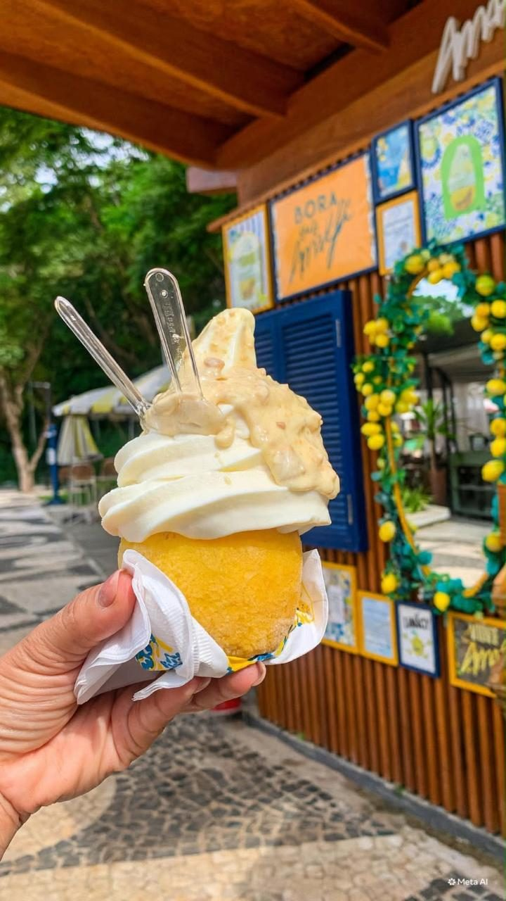
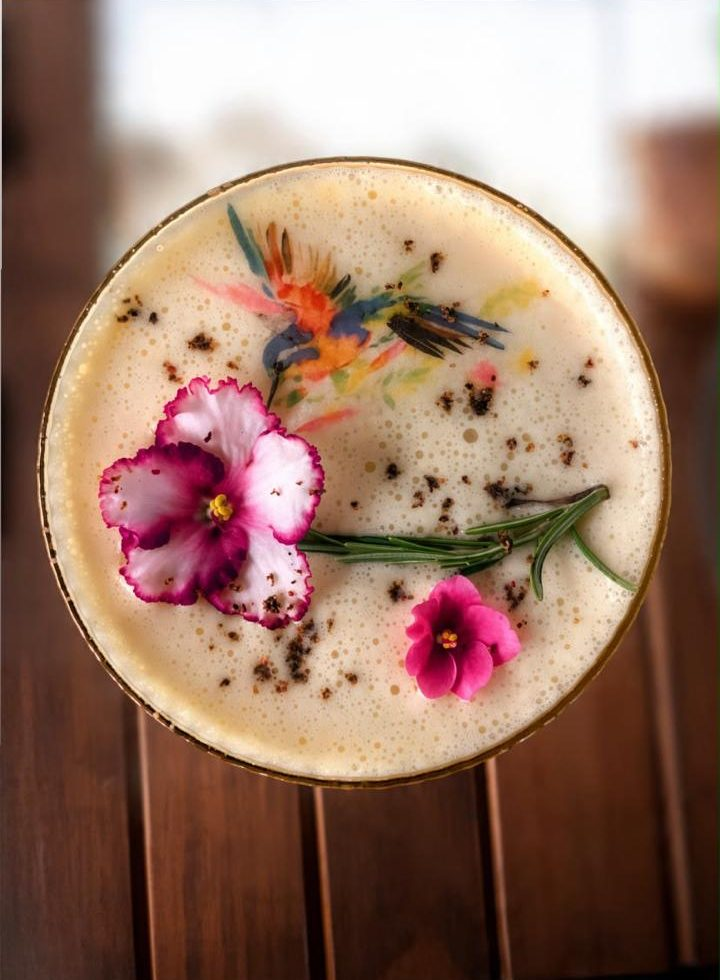
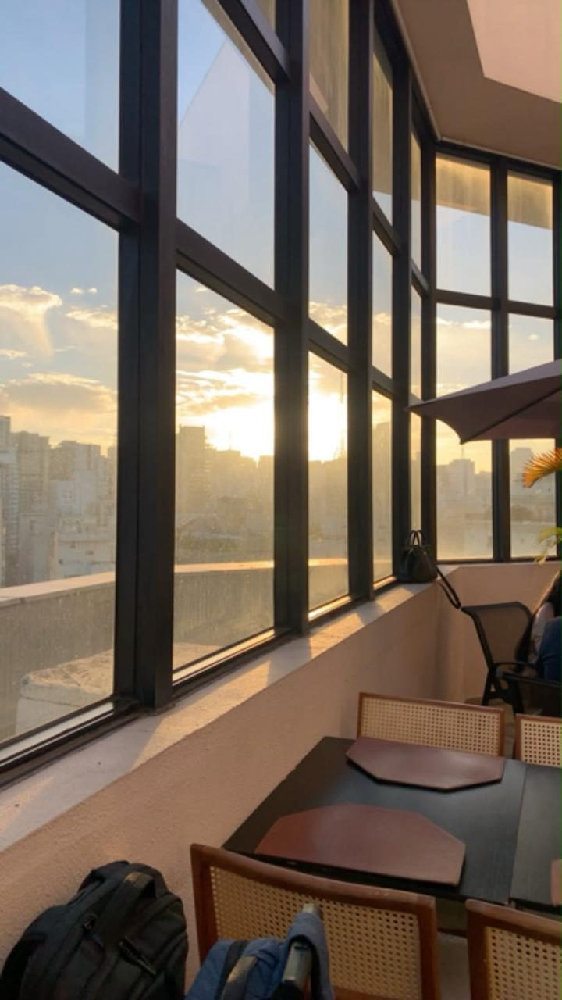

SABORES, LUGARES E DESCOBERTAS
GESSICA SOUZA
Um blog sobre tudo o que me tira da rotina, por São Paulo e pelo mundo.

Prazer, eu sou a Gessica
Fora da poça
Aqui vai a minha biografia: quem eu sou, de onde eu venho e o que me faz sair de casa para descobrir um lugar novo.
Neste blog eu conto o que encontro pelo caminho: sabores, cantinhos de São Paulo e tudo o que me tira da rotina.
PELO CAMINHO
Algumas descobertas



“Eu achava que conhecia o mundo até que descobri que vivia dentro de uma poça!”
ÚLTIMAS HISTÓRIAS
Do blog
Carregando histórias...